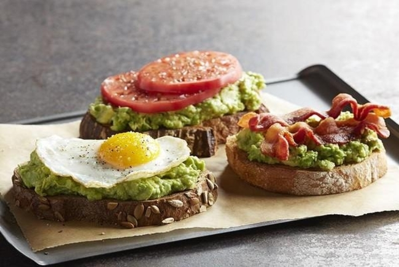
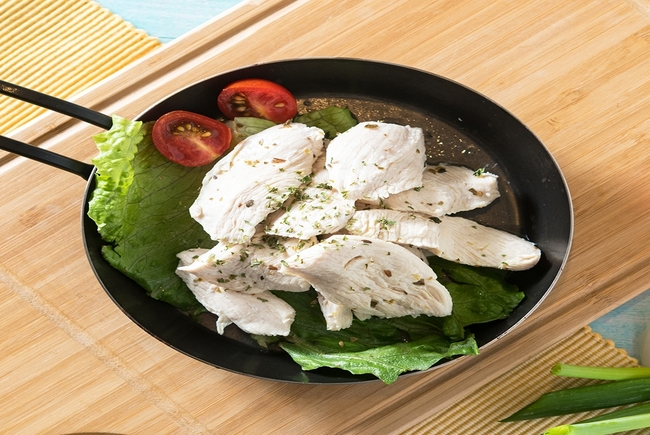
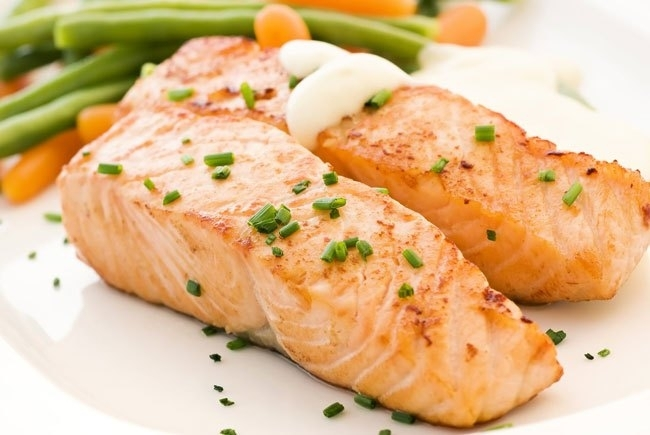
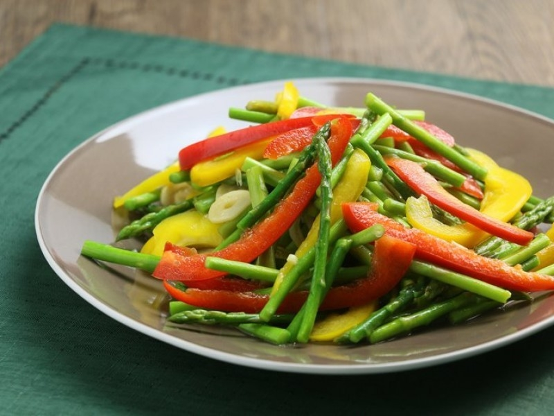
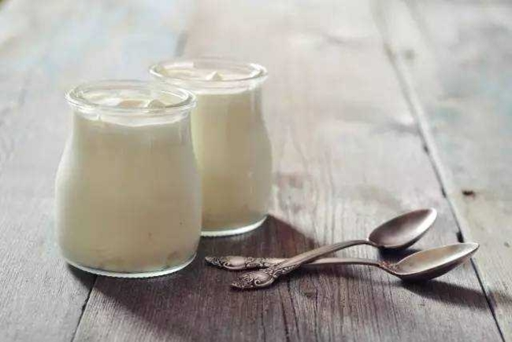
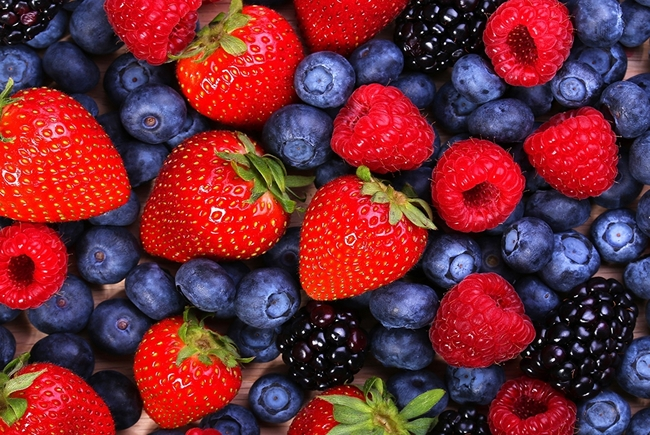
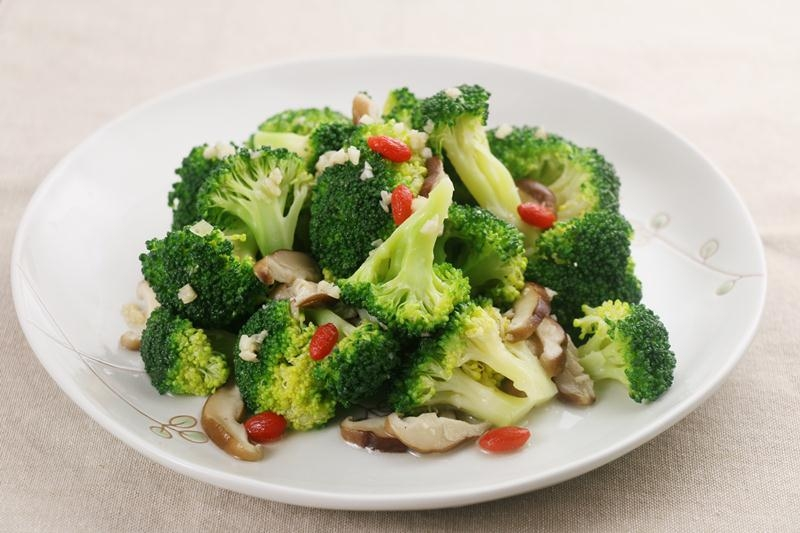
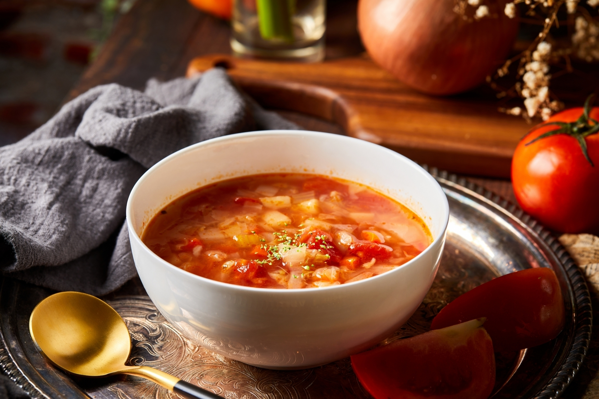

減脂飲食小知識
- 減少熱量攝取
- 多吃蔬果
- 多喝水
- 少吃油炸食物
- 少吃高糖食物
酪梨太陽蛋吐司
酪梨所含的植物脂肪具有降低膽固醇功能的「不飽和脂肪酸」，油脂能延長飽足感，減少進食，且酪梨富含礦物質與維生素，營養價值極高，但一天不宜食用超過半顆。
義式舒肥雞胸肉
雞胸肉不含碳水化合物，所以除了增肌，也是瘦身減脂常見的食材，雞胸肉的最大優點就是低卡、低脂、高蛋白，是極佳的蛋白質補充來源。
嫩煎鮭魚
鮭魚可以有效幫助脂肪燃燒並減少發炎，當中含有的omega-3脂肪酸對於維持心臟健康非常重要，不僅能幫助代謝，還能燃燒體內更多的卡路里，達到減脂的功用。
蘆筍炒甜椒
蘆筍富含豐富的天門冬胺酸，它是胺基酸的一種，能提高新陳代謝，有助於減肥。蘆筍中所含的豐富葉酸成分，更有降低熱量轉換成脂肪的作用，且有助多餘膽固醇及脂肪排出的效果。
無糖優格
優格是減脂期間的好選擇，特別是選擇低糖或無糖的種類，它富含蛋白質且能夠增強飽足感，益生菌能助於腸道的健康，新陳代謝也會跟著好，還能有助於免疫系統運作。
莓果
莓果類包含藍莓、草莓、黑莓、覆盆子，非常適合減脂期間食用，低熱量、高纖維，富含抗氧化劑、維生素及抗發炎成分，也能有助於增強免疫力，對整體健康有很大的幫助。
清炒鮮菇花椰菜
花椰菜是高纖蔬菜，可幫助腸道蠕動、提升身體的基礎代謝，讓身體的血液循環變好還能消水腫，也含有胡蘿蔔素和類黄酮，能抑制身體對油脂的吸收，並加速脂肪的燃燒代謝。
番茄蔬菜湯
番茄的熱量低且含水量高，富含纖維及茄紅素，也能夠提供多種維生素，特別是維生素C有助於抗炎、增強免疫力、促進代謝和燃燒脂肪，無論是單吃或是搭配其他菜餚都對於營養均衡很有幫助。